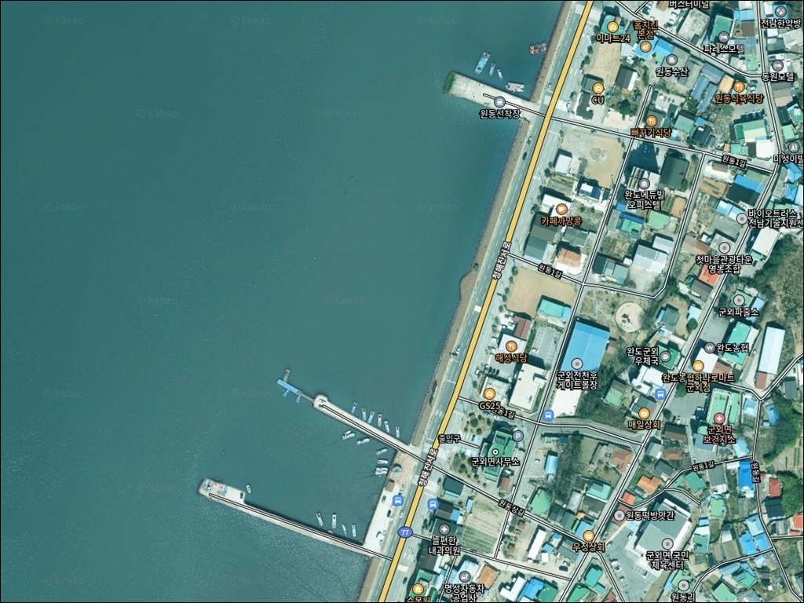
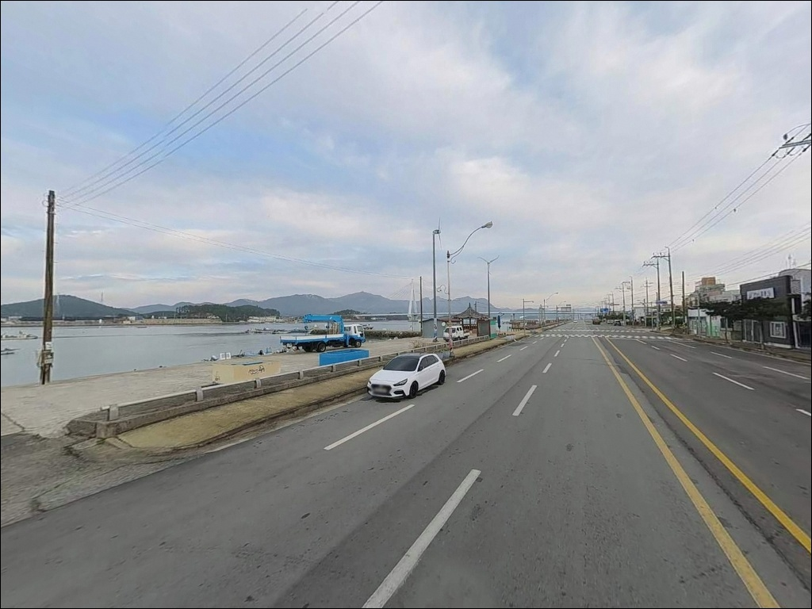
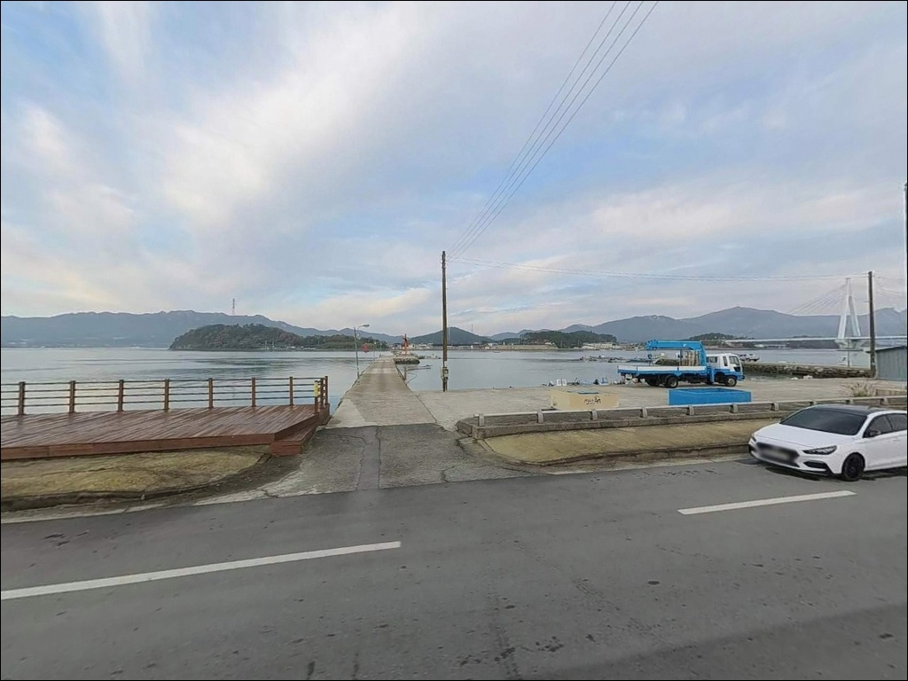
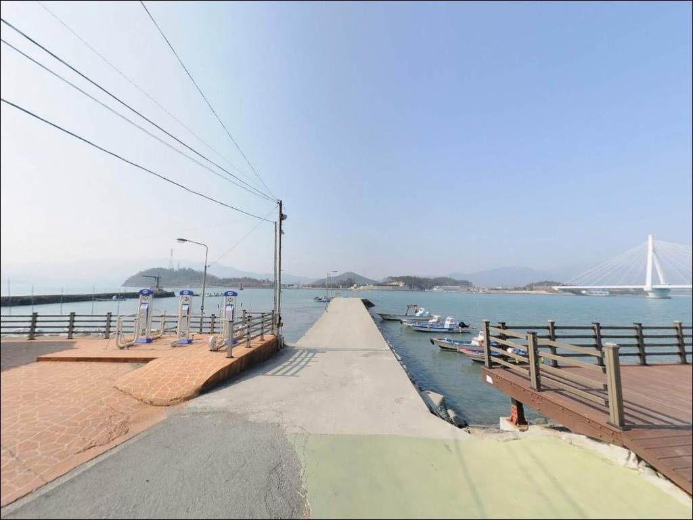
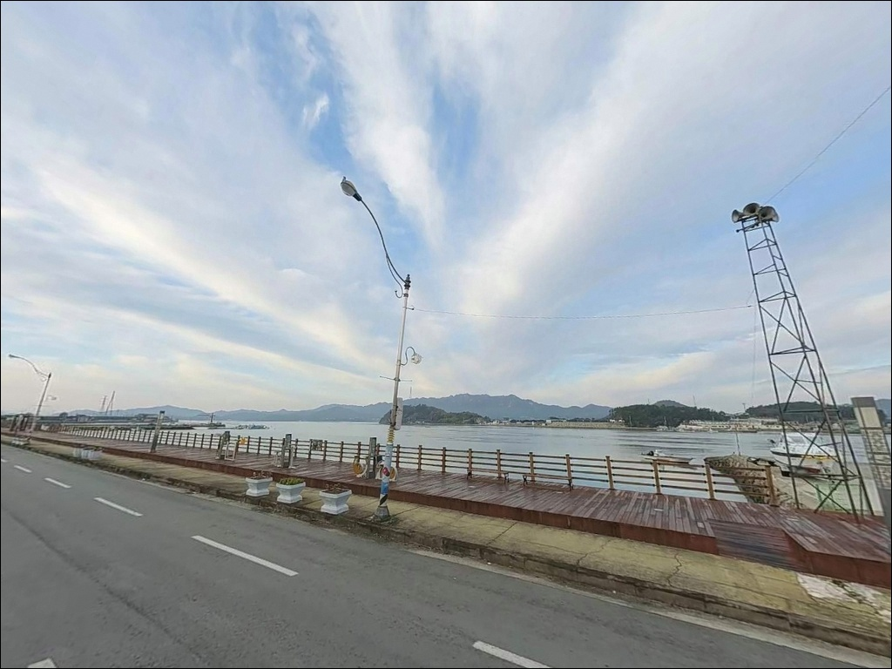
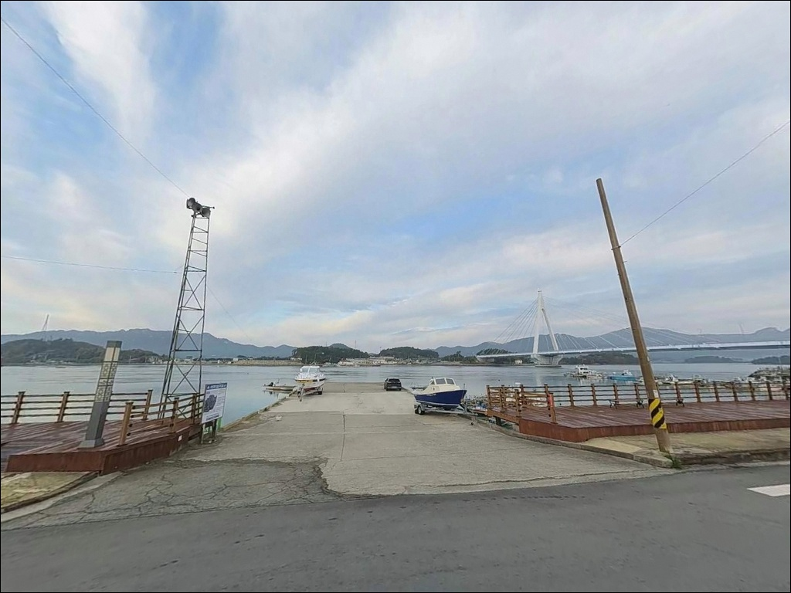
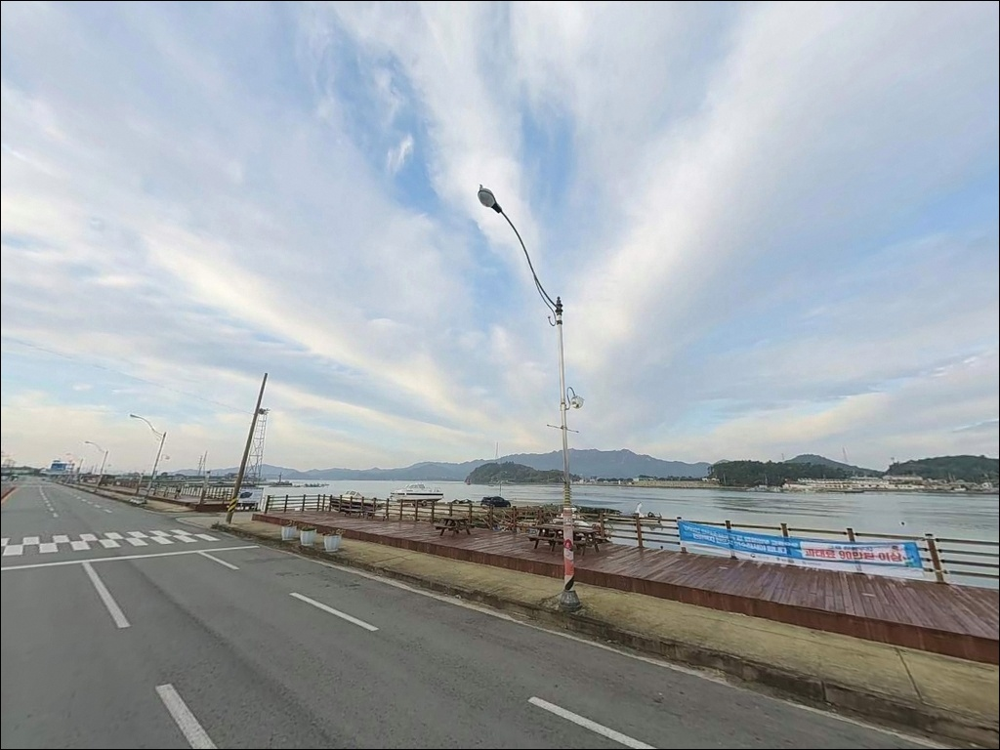
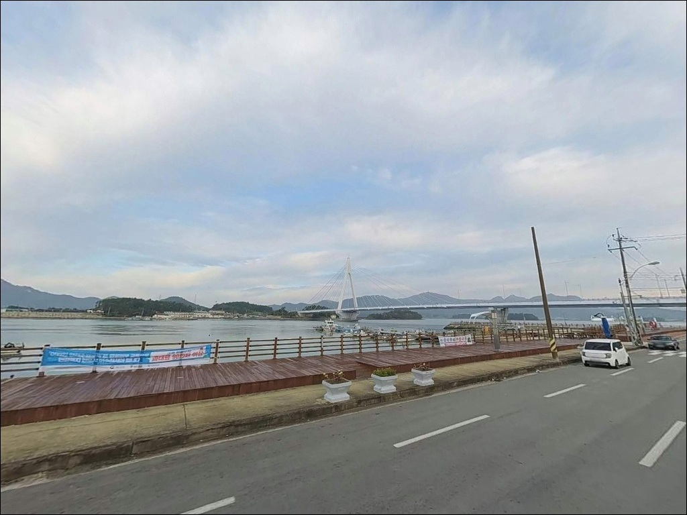
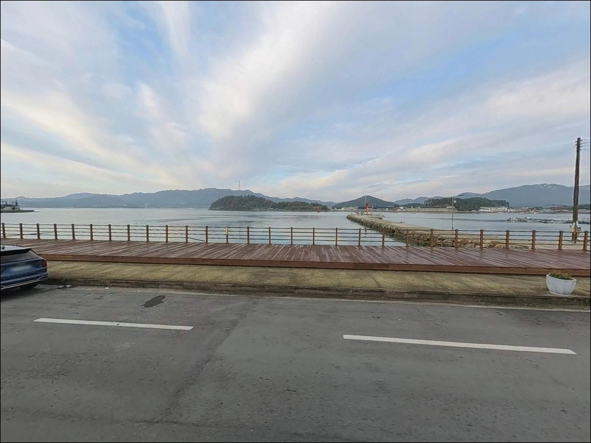

원동선착장, 전남 완도군 조용해서 힐링 그 자체인 바다 차박 낚시 스팟
이 페이지에는 광고(제휴 링크 포함)가 있으며, 광고 링크를 통해 구매하면 운영자가 판매 수익 또는 수수료를 받을 수 있습니다. 포인트 사진: 카카오맵 스카이뷰·로드뷰. 이 페이지의 지도·사진 이미지는 카카오맵의 실제 서비스 이미지와 다를 수 있습니다.


포인트 안내
원동선착장
전남 완도군 군외면 원동리 1066-5
간조 전후에 이 선착장을 찾으면
펄 바닥이 드러나는 구간이 생기고,
어떤 채비를 던져도 낚시 여건 자체가
만들어지지 않습니다.
원동선착장은 수심이 극히 얕은 내만형 포인트로,
들물이 들어오는 타이밍에 맞춰
진입 시각을 정하는 것이 출조 전 첫 번째 판단입니다.
완도대교 남단 군외면 쪽에 딸린 이 선착장은
교각 구조물이 가까워
조류 흐름이 변하는 지점이 자연스럽게 형성되는 곳입니다.
수심은 얕지만 교각 주변 구조물 언저리와
들물 흐름이 맞물리는 구간에서
감성돔, 숭어, 농어를 기대해볼 수 있는 구조입니다.
이 글은 원동선착장의
물때 판단 기준, 낚시 여건 분석,
진입 환경과 차박 가능성에 집중합니다.
조황 단정과 특정 어종 보장은
이 글의 범위에 포함되지 않습니다.

1. 포인트 위치 및 진입 동선 분석
원동선착장은 완도대교를 건너지 않고
군외면 방향 해안도로를 따라
진입하는 구조입니다.
진입로 자체는 포장 상태이며
완도대교 남단 교각 아래 구간까지
차량 접근이 가능합니다.
다만 마을 내부로 들어갈수록
도로 폭이 좁아지는 구간이 있어
대형 SUV 이상 차량은 진입 전
위성지도로 동선을 먼저 확인하는 편이 좋습니다.
회차는 선착장 주변 공터에서 가능한 수준이며,
반드시 어선 접안 동선과
어구가 놓인 공간을 피해 자리를 잡아야 합니다.
주차 후보는 선착장 앞 갓길과
입구 쪽 공터가 기본이지만,
수용 대수가 많지 않으므로
주말 출조라면 오전 일찍 진입하는 편이 안전합니다.
완도읍은 완도대교 하나 거리로
차로 5~10분 내에 닿을 수 있습니다.
선착장 자체 반경에는 편의점이
도보 3분 거리에 있어
완전 고립형 포인트는 아닙니다.

2. 차박 환경과 야간 체류 여건
완도대교 교각 조명이 인근에 있어
완전한 암흑 포인트는 아닙니다.
다만 선착장 끝단 쪽은 교량 조명이
직접 닿지 않는 구간이 있으므로
개인 헤드랜턴은 반드시 챙겨야 합니다.
원동리는 마을 밀집도가 있는 편이라
프라이버시 확보는 쉽지 않습니다.
낚시를 마치고 잠깐 쉬어가는 용도라면
무난하지만,
차박을 메인으로 계획하고 있다면
황진리 방파제나 불목리선착장 방면이
공간 여유가 더 있는 편입니다.
남동풍이 강한 날은 파고가 높아질 수 있으므로
기상 예보를 출발 전 반드시 확인하시기 바랍니다.


3. 주변 편의시설 및 인프라 현황
원동선착장 도보 3분 거리 안에
편의점이 여러 곳 있습니다.
군외면사무소 터미널 방면에
화장실도 확인됩니다.
소품이나 간식 보충은 현장 인근에서
해결이 가능한 구조입니다.
완도읍으로 이동하면
마트, 식당, 낚시용품점까지
차로 5~10분 내에 닿을 수 있습니다.
부족한 채비가 있다면
완도읍 방향 낚시용품점을 먼저 들르고
진입하는 동선이 효율적입니다.
완도대교 진입로 인근에 주유소가 있어
귀가 전 연료 확인도 어렵지 않습니다.
응급 상황 발생 시 완도군
보건의료원 접근도 가능한 거리입니다.

4. 진입 전 반드시 챙겨야 할 준비사항
원동선착장에서 가장 먼저 확인할 것은
물때입니다.
이 포인트의 수심은 극히 얕고
저질이 펄이라,
간조 전후에는 채비를 던져도
낚시 여건이 만들어지지 않습니다.
수심이 극히 얕은 포인트에서는
물때 확인이 낚시 가능 여부 자체를 결정합니다.
바다타임에서 원동항 기준 들물 타이밍을 확인하고
만조 전후 2시간에 집중하는 것이
이 포인트 공략의 기본입니다.
완도 해역은 양식장이 광범위하게 설치된 지역입니다.
현장에서 양식 구역 경계를
직접 눈으로 확인한 뒤
그 바깥으로 채비를 던지는 것이
기본 매너입니다.
완도대교 교각 근처를 지나는
선박 통행이 있으므로
채비가 뱃길 방향으로
흘러가지 않도록 관리해야 합니다.
펄 저질이어서 채비 손실보다는
바늘에 펄이 끼는 상황이 자주 생깁니다.
원투낚시를 계획한다면
여분의 채비와 바늘을
넉넉히 준비하고 진입하는 편이 좋습니다.
야간 낚시 시에는
교량 조명 맹점 구간을 대비한
개인 조명이 필수입니다.

5. 들물 타이밍이 바꾸는 원동선착장 낚시 여건
원동선착장의 구조적 특징은
완도대교라는 대형 교량 구조물이
바로 위에 걸쳐 있다는 점입니다.
교각 주변은 조류 흐름이 바뀌는 지점이 되고,
그늘이 생기는 구간 아래로
어류가 모이기 좋은 조건이 형성됩니다.
완도대교 교각 주변은 조류 흐름이 바뀌는 지점으로,
들물 타이밍에 감성돔과 숭어가
집결하기 좋은 구조 조건을 갖추고 있습니다.
수심은 바다타임 등록 기준
매우 얕은 구간으로,
간조 전후에는 바닥이 드러나는 구간이 생깁니다.
들물이 차오르면서
수위가 올라오는 만조 전후 구간이
낚시 여건이 살아나는 시간대입니다.
저질은 펄로, 바닥층에서는
붕장어와 도다리를 기대해볼 수 있는
지형 조건입니다.
계절별로는 봄 수온이 오르는
4월 중순 이후부터 감성돔 시즌이 시작되며,
가을까지 이어지는 편입니다.
숭어는 완도 권역에서
연중 주요 어종으로 꼽히며
들물 집결 패턴을 보이는 경향이 있습니다.
최신 조황은 출조 전
'원동항 낚시', '완도대교 낚시 조황'으로
직접 검색해 확인하시기 바랍니다.


6. 포인트에 어울리는 낚시 스타일
이 포인트에서 가장 잘 맞는 낚시는
감성돔을 겨냥한 릴찌낚시입니다.
들물이 들어오는 타이밍에
교각 인근 조류 변화 구간으로
찌를 흘려 넣는 방식이
이 포인트의 구조 조건에 맞습니다.
4월 중순부터 수온이 오르는 시기가
감성돔 릴찌낚시 시즌으로 맞아 떨어집니다.
원투낚시도 이 포인트 구조에 맞는 스타일입니다.
펄 저질에서는 붕장어, 도다리, 숭어를
기대해볼 수 있습니다.
40~60m 거리를 노리는 방식이 기본이며,
조류가 느려지는 만조 전후 구간에
바닥층 탐색에 집중하는 방식이 유효합니다.
루어낚시는 야간 농어를 대상으로
교각 석축 경계를 천천히 탐색하는 방식이 어울립니다.
그럽웜에 지그헤드를 조합해
구조물 언더핀 쪽을 노리는 방식이
이 포인트의 교각 지형과
잘 맞는 운용법입니다.
노래미는 암반 경계가 있는 구간에서
시즌을 가리지 않고
손쉽게 반응을 끌어낼 수 있는 어종입니다.

7. 대안 포인트와 플랜 B 동선
원동선착장 주차 여건이 여의치 않거나
들물 타이밍 전 대기 시간이 길 경우,
원동리 방파제(약 1.2km)가
첫 번째 대안 포인트입니다.
같은 해안선에 붙어 있어
차량으로 5분 이내에 이동이 가능하며,
선착장 구조와 비슷한 여건에서
낚시를 이어갈 수 있습니다.
황진리 방파제(약 1.8km)는
같은 군외면 해안선에서
원동선착장보다 공간 여유가 있는 편입니다.
차박 메인 목적이라면
이쪽을 베이스로 삼고
원동선착장을 탐색 포인트로 붙이는
플랜 B 동선이 현실적입니다.
수심과 낚시 여건을 조금 더 살리고 싶다면
완도읍 방향으로 이동해
불목리선착장이나 송곡항을 노려볼 수 있습니다.
송곡항은 수심 6~10m로
원동선착장보다 깊고
편의시설도 갖춰져 있어,
조황이 기대에 못 미칠 때
부담 없이 이동할 수 있는 선택지입니다.

물때 한 가지만 맞추면
원동선착장은 충분히 쓸 만합니다
짧은 출조로 생활낚시를 즐기거나
완도 권역 포인트를 탐색하는 낚시인에게
원동선착장은 부담 없이 들를 수 있는
구조입니다.
대형 방파제처럼 긴 이동 거리 없이
완도대교 교각 구조물 인근에서
감성돔 릴찌낚시와 원투낚시를
바로 시작할 수 있다는 점이
이 포인트의 실용적인 장점입니다.
다만 수심이 얕고 저질이 펄이라는 조건은
물때와 타이밍을 더 꼼꼼하게 따져야 하는
포인트라는 뜻이기도 합니다.
들물 진입을 기준으로 출발 시각을 역산하고,
만조 전후 2시간 안에 낚시를 집중하는 방식이
이 포인트에서 시간을 낭비하지 않는 방법입니다.
주차가 여유롭지 않아
차박 메인으로는 추천하기 어렵지만,
황진리 방파제나 불목리선착장과 묶어서
하룻밤 낚시 일정으로 계획한다면
완도 군외면 해안선을 알차게 돌 수 있는
동선이 만들어집니다.